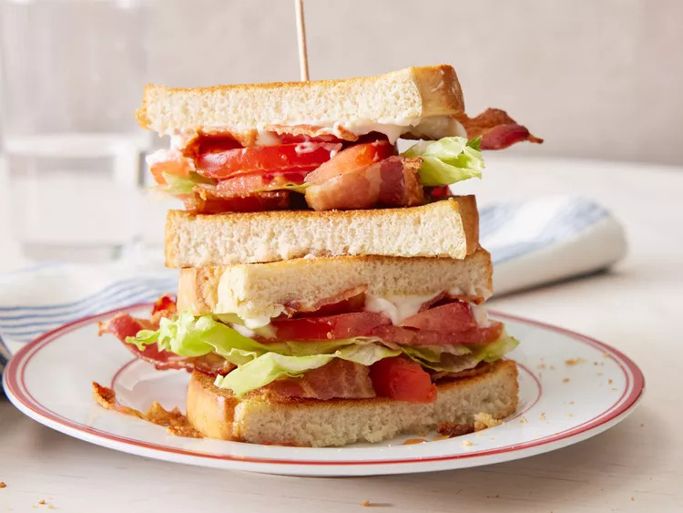

BLT

Photo by Dotdash Meredith Food Studios
Description
A BLT is a classic American sandwich named after its three main ingredients:
Key Components
- Bacon: Crisp, smoky, and salty strips of pork bacon provide the savory core of the dish.
- Lettuce: fresh greens like iceberg, romaine, or butter lettuce add a cool and crunchy texture.
- Tomato: Ripe, juicy slices of tomato bring a bright, slightly sweet, and acidic balance.
- Bread and Condiment: The ingredients are layered between two slices of toasted bread—often simple white or sourdough—spread with a generous layer of mayonnaise.
Ingredients
- 4 slices bacon
- 2 leaves lettuce
- 2 slices tomato
- 2 slices bread, toasted
- 1 tablespoon mayonnaise
Steps
- Gather all ingredients.
- Cook bacon in a large, deep skillet over medium-high heat until evenly browned, about 10 minutes. Drain bacon on a paper towel-lined plate.
- Arrange cooked bacon, lettuce, and tomato slices on one slice of bread. Spread mayonnaise on the other slice of bread.
Home